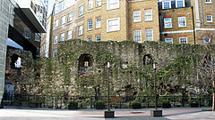
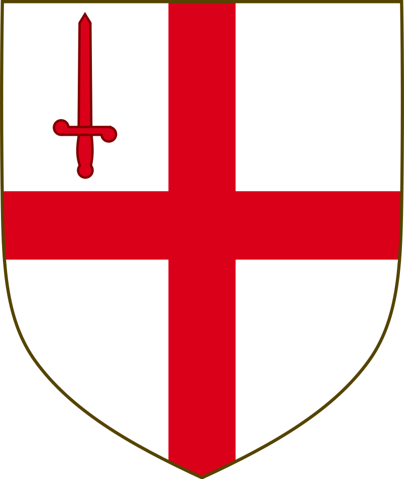
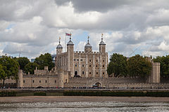
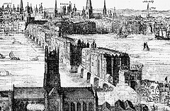
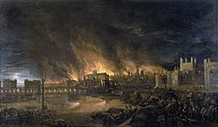
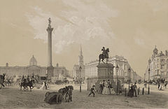
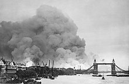
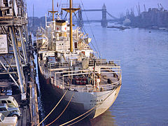

Содержание
История Лондона
Римский период
 Основная статья: Лондиниум
Лондиниум был основан римлянами после их третьего вторжения на Британские острова в 43 году н. э.[16][17] Поселение
на северном берегу Темзы при впадении в неё речушки Уолбрук должно было защищать деревянный мост, построенный через
Темзу.
Римляне, вероятно, продвигались с побережья моря вглубь острова по дороге, проходившей через брод в районе нынешнего
Вестминстерского моста.
Зимой 60-61 годов бритты, воспользовавшись переброской римских войск на остров Англси, подняли восстание и,
возглавленные королевой Боудиккой, разрушили Камулодун — первую столицу римской Британии, после чего сожгли и
Лондиниум.
Город, однако, был восстановлен и позднее стал новой её столицей. На рубеже II—III веков он был обнесён шестиметровой
оборонительной стеной; площадь города составляла тогда одну квадратную милю. В III веке после разделения Британии на
две части — Верхнюю и Нижнюю — Лондиниум стал столицей Верхней Британии. В конце IV века она была разделена вновь, и
город Был выбран центром провинции Максима Цезарейская.
В 410 году римляне покинули и Британию, и Лондиниум[18]. К исходу этого века он тоже был оставлен.
К содержаниюСредневековье
 В VI—VII веках в миле западнее Лондиниума саксы основали город Лунденвик (др.-англ. wīc «селение, город»), ставший
столицей Восточносаксонского королевства[прим. 1]. После принятия королём Эссекса Сабертом христианства в 604 году в
черте Лондиниума разместилась кафедра первого епископа восточных саксов Меллита и был заложен собор Святого Павла. В
VIII веке эти территории перешли под власть королевства Мерсии. В 842 и 851 годах Лунденвик подвергся нападениям
викингов. В 871 году в Лондинии зимовала «великая языческая армия» викингов, завоевавшая половину Англии, и до 886 года
эти места оставались в руках датчан.
В 886 году Лунденвик отошёл к западносаксонскому королю Альфреду Великому, который перенёс это поселение в Лондиний,
теперь — Лунденбурх. С 1013 по 1042 год последний вновь находился под властью датчан. Вскоре англосаксонский король
Эдуард Исповедник перенёс свою резиденцию в западный пригород Лунденбурха на остров Торни, ныне район Вестминстер (от
англ. west «запад» и minster «монастырская церковь»), где восстановил старое аббатство и основал королевский дворец[19].
Таким образом, Лондон разделился на две основных части: собственно город — Сити, со временем превратившийся в деловой
район Лондона, и Вестминстер — место пребывания короля, а позднее — парламента.
Герб Лондона с 1381 года, ныне — щит герба Сити[20]
После победы норманнов в битве при Гастингсе в Вестминстерском аббатстве состоялась коронация Вильгельма Завоевателя.
Новый король Англии подтвердил свободы Лондона, исключив город из всеобщей переписи покорённого населения. На берегах
Темзы на случай восстания норманны возвели Тауэр и другие оборонительные сооружения.
В 1189 году была учреждена должность выборного мэра Лондона. На рубеже XII—XIII веков из древней англосаксонской столицы
Винчестер казначейство переехало в Вестминстер, и Лондон со временем превратился в столицу Англии. К 1209 году был
построен первый каменный Лондонский мост, простоявший более пятисот лет. В 1216 году во время гражданской войны в город
в последний раз вошла иностранная армия французов во главе с принцем, выступивших на стороне знати против короля. Таким
образом, Лондон является единственной европейской столицей, которая не была захвачена врагом ни разу за последние почти
8 веков[источник не указан 3629 дней]. В 1320 году на берегу Темзы основался «Стальной двор» — одна из контор немецких
купцов Ганзы, просуществовавшая до 1598 года[21].
В 1348 году Лондон был охвачен эпидемией чумы, от которой вымерло до половины населения города. К 1380 году в городе
проживало около 50 тысяч жителей. Эпидемия стала косвенной причиной крестьянского восстания 1380 года под
предводительством Уота Тайлера, во время которого Лондон подвергся разграблению
XVI—XVII века
 С приходом к власти династии Тюдоров в Англии началась эпоха абсолютной монархии. Централизация власти в руках короля
привела к тому, что столица стала развиваться и богатеть ещё быстрее, чем раньше. Благоприятно отразились на городе
времена правления Генриха VIII и Эдуарда VI — были основаны знаменитые лондонские парки Гайд-парк и Кенсингтон-гарден и
открыто несколько крупных больниц[24].
Реформация, произошедшая в Англии при Генрихе VIII, не закончилась, в отличие от других стран, кровопролитием: здесь
церковные преобразования контролировались королём и были инициированы «сверху», а не «снизу», как в большинстве других
стран. После Реформации около половины площади Лондона было занято религиозными сооружениями, и примерно треть населения
составляли монахи. Ситуация изменилась в 1538—1541 годах, после того, как Генрих VIII издал закон о главенстве короля
над церковью. После этого значительная часть церковного имущества была конфискована и передана в руки королю и его
ближайшим вассалам.
Лондон развился до одного из крупнейших торговых центров Европы. В городе процветали малые предприятия, а крупные
английские владельцы вели свою торговлю по всему миру — от России до Америки. В частности, королева Елизавета I
принимала послов из Московии в садах пригородов Лондона Ричмонде[25]. Создавались гигантские компании, такие, как
Ост-Индская в 1600 году. После того, как в 1572 году испанцы захватили и разграбили крупный голландский город Антверпен,
Лондон стал крупнейшим центром торговли на Северном море. Стремительно увеличивалось население столицы — с 50 тыс.
человек в 1530 году до 225 тыс. в 1605 году[24]. Также в XVI веке появились первые карты Лондона. Появились первые
публичные театры, самым популярным из которых стал «Глобус», в котором шли пьесы Уильяма Шекспира.
В XVI веке в Вест-Энде начали селиться аристократы и придворные. Вскоре район стал одним из самых престижных мест
города. До сих пор дом в Вест-Энде является пропуском в высший свет Лондона.
Во время Английской гражданской войны Лондон занял сторону Парламента. Были созданы войска ополчения и возведены
оборонительные укрепления, чтобы защитить город от роялистов, которые чем дальше, тем ближе продвигались к столице —
битва при Брентфорде произошла всего в нескольких милях от Лондона. Однако хорошо организованная оборона не позволила
королевским войскам взять город, что и сыграло решающую роль в войне — хранившиеся в Лондоне богатства помогли
Парламенту одержать победу.
В Лондоне, как и во всех европейских городах того времени, отсутствовали канализация и система здравоохранения, к тому
же город был сильно перенаселён, и поэтому там регулярно вспыхивали эпидемии со многими сотнями, а порой и тысячами
жертв. Но самая страшная случилась в середине XVII века, в 1665—1666 годах. В Англии её называют Великой чумой (англ.
The Great Plague). В Лондоне жертвами эпидемии стали примерно 60 тыс. человек (пятая часть города). Сэмюэл Пипс,
хроникёр города, записал 4 сентября 1665 года следующее: «За неделю умерло более 7400 человек, из них 6000 — от чумы.
День и ночь почти без перерыва с улицы доносится погребальный звон церковных колоколов»[26].
Сразу после окончания эпидемии случилась ещё одна катастрофа — Великий лондонский пожар 1666 года. Если Великая чума
покосила население Лондона, то пожар нанёс серьёзный материальный ущерб, уничтожив 13,2 тыс. домов (около 60 % города) и
87 церквей (в том числе старый собор Святого Павла). При этом в огне погибло всего восемь человек[27], зато многие
остались без дома и лишились всех средств к существованию.
В 1688 году армия короля Нидерландов Вильгельма Оранского высадилась в Англии. 17 декабря 1688 года голландские войска
заняли Лондон. Английский король бежал во Францию, а Вильгельм провозгласил себя новым королём Великобритании.
После восстановления Лондон окончательно превратился в финансовую столицу мира. В 1694 году открылся Банк Англии,
позволивший стране ещё увеличить своё влияние на мировую экономику. В 1700 году 80 % импорта и 69 % экспорта Англии
приходилось на Лондон, а население города превышало 500 тыс. человек.
В XVIII веке, в эпоху Просвещения, получили широкое распространение пресса и литература. С тех пор центром издательской
жизни Лондона стала улица Флит-стрит. В том же веке был отмечен рост преступности в столице, из-за чего были ужесточены
наказания: даже за незначительное преступление теперь грозила смертная казнь. В конце XVII века Лондон стал одним из
технологических центров Европы, о чём свидетельствует посещение города великим посольством, членом которого был под
именем Петра Михайлова и царь Пётр I, который, в частности, посетил там несколько заводов и Гринвичскую обсерваторию
XVIII—XIX века
К 1700 году Лондон превратился в крупнейший город Европы[30]. В 1707 году Лондон приобрёл статус столицы Великобритании,
нового государства, созданного посредством объединения Англии и Шотландии. В том же XVIII веке были построены новый
собор Святого Павла и Букингемский дворец — символы современного Лондона, а также Вестминстерский мост, который стал
всего лишь вторым мостом в Лондоне через Темзу. В 1719 году основан Вестминстерский госпиталь[31]. К концу XVIII века
население Лондона достигло миллиона человек.
Лондон XIX столетия — город контрастов. С одной стороны, он был столицей крупнейшего государства в мире — Британской
империи, экономическим и политическим центром мира, а с другой — городом, где в трущобах, практически без средств к
существованию, жили миллионы бедняков.
XIX век — эпоха стремительной индустриализации и урбанизации в странах Европы и Северной Америки. В этом столетии в
Лондоне было построено огромное количество новых фабрик и заводов, а население увеличилось в 6 раз. В XIX веке Лондон
был самым большим городом мира, к 1900 году его население составляло около 6 млн человек[27]. В столице появились целые
промышленные районы, и самый известный из них — Ист-Энд, ставший противоположностью фешенебельного Вест-Энда.
В XIX веке в облике Лондона произошли кардинальные изменения. В 1836 году была открыта первая железная дорога,
соединившая Лондонский мост и Гринвич, и меньше чем за 20 лет открылось 6 вокзалов[32]. В 1863 году в Лондоне появилось
первое в мире метро. Кроме того, в XIX веке были построены Часовая башня, Альберт-холл, комплекс Трафальгарской площади,
Тауэрский мост. Впервые за всю историю существования Лондона появилась канализация (см. Великое зловоние).
В XIX веке Лондон стал центром русской свободной печати — в нём издавались журналы «Колокол», «Накануне», «Народоволец»,
«Хлеб и воля», которые потом тайно передавались в Россию. В Лондоне в то время образовалась немалая русская колония.
Наиболее известные русские лондонцы XIX века — Александр Иванович Герцен и Николай Платонович Огарёв[33].
В XIX веке была реформирована система городского самоуправления, так как старая система, существовавшая ещё со Средних
веков, явно не отвечала требованиям разросшегося мегаполиса. В 1855 году был создан Столичный комитет по работам (англ.
Metropolitan Board of Works), контролировавший городское строительство и создание инфраструктуры. В 1888 году этот орган
ликвидировали, а административные функции были впервые возложены на выборный орган — Совет Лондонского графства.
В 1851 году Лондон принял всемирную выставку[34].
В середине века Лондон впервые столкнулся с массовой иммиграцией. Особенно большой приток приезжих шёл из Ирландии.
Также в городе образовалась большая еврейская община.
Лондон стал одним из центров мировой моды в XIX веке. Столица Великобритании, в отличие от Парижа или Милана, приобрела
известность благодаря мужской моде. Улицей модных мастерских стала Сэвил-Роу. К началу XIX века относится появление
стиля денди, распространившегося по всей Европе.
XX — начало XXI века
 
Первая мировая война на время приостановила развитие Лондона. Город впервые подвергся авианалётам. В период между двумя
мировыми войнами Лондон продолжал увеличиваться, но больше по площади, а не по населению.
Великобритания стала прибежищем для эмигрантов из России и в XX веке. В 1903 году в Лондоне прошёл второй съезд
запрещённой партии РСДРП, на котором она разделилась на большевиков и меньшевиков[35]. Поэтому после революции 1917 года
в Лондон приехали такие эмигранты, как Павел Николаевич Милюков[36].
В 1930-е годы многие жители города пострадали из-за Великой депрессии: сильно вырос уровень безработицы, упал уровень
жизни. Отсутствие действий со стороны властей привело к появлению множества радикальных партий как левого, так и правого
направления. Большинство из них базировалось в рабочем Ист-Энде. В Парламенте Великобритании получили несколько мест
коммунисты, широкой поддержкой пользовался и Британский союз фашистов. Кульминацией борьбы между левыми и правыми стала
так называемая «Битва на Кейбл-стрит» — уличные бои между политическими экстремистами обоих флангов и полицией.
В те же 1930-е в Лондон из нацистской Германии бежали многие евреи. Во время Второй мировой войны столица Великобритании
подвергалась неоднократным авиабомбардировкам, самые тяжёлые из которых пришлись на сентябрь 1940 года и май 1941 года.
Многие жители были эвакуированы из столицы. Бомбоубежищами служили станции метрополитена. Всего за время войны в Лондоне
её жертвами стали 30 тыс. мирных жителей, 50 тыс. получили ранения, десятки тысяч домов были разрушены[37]
Сразу после войны Лондон во второй раз принял Олимпийские игры (1948).
В послевоенное время Лондон утратил статус крупнейшего порта Великобритании, так как оборудование доков устарело, и порт
не мог обслуживать большие грузовые корабли. Водные терминалы Лондона были перенесены в близлежащие города Феликстау и
Тилбери, а район Доклендс в 1980-е был перестроен — теперь там находятся офисы и многоквартирные дома.
В 1952 году — Великий смог, крайне вредная смесь тумана и дыма промышленного происхождения, на пять дней спустился на
Лондон. Вскоре концентрация в воздухе продуктов горения стала такой высокой, что за последующие недели в городе от смога
погибли около 4 тыс. человек, а ещё 8 тыс. стали жертвами катастрофы в последующие несколько месяцев[38]. Произошедшее
заставило власти всерьёз заняться этой проблемой, в результате чего был издан общегосударственный закон «О чистом
воздухе» (1956), который ввёл ряд мер по снижению уровня загрязнения воздуха, особенно путём введения «зоны контроля
дыма» в некоторых городах, предусматривал переход на такие источники тепла как электричество и газ, а также меры по
передислокации электростанций в более отдалённые от городов территории, а также аналогичный городской закон (1954).
Лондонский Пул в начале 1960-х годов: порт ещё оставался в черте города
В 1960-е, благодаря популярным музыкальным коллективам вроде Beatles и Rolling Stones, город стал одним из мировых
центров молодёжной субкультуры (получив прозвище «Свингующий Лондон»). Свингующий Лондон (англ. Swinging London) — это
лондонская молодёжная субкультура в 1960-е годы. Термин родился в 1966 году благодаря статье в журнале «Time». Этот
период характеризуется отказом молодёжи от традиционных ценностей, гедонизмом и оптимизмом. Период «свингующего Лондона»
отразился на музыке, литературе, изобразительном искусстве, не говоря уж о стиле жизни. Настоящими культурными иконами
этого времени стали рок-музыканты The Beatles, литературный персонаж Яна Флеминга Джеймс Бонд, автомобиль Mini. Период
свингующего Лондона закончился примерно в 1967 году, когда на смену ему явилась субкультура хиппи, пришедшая с западного
побережья США.
В 1966 году сборная Англии выиграла в финале на стадионе «Уэмбли» Чемпионат мира по футболу.
Второй виток популярности английской моды пришёлся на начало 1960-х годов, когда в западноевропейском обществе произошла
культурная революция. На первое место вышли дисгармония, асимметрия, выражавшие протест против консервативного
буржуазного уклада жизни. Получает развитие стиль casual, он быстро становится популярным в кругу различных молодёжных
движений: моды, скинхеды, футбольные хулиганы. Новатором стиля выступил Бен Шерман, кроме того, большой популярностью
пользовался теннисист в отставке Фред Перри, британский аналог француза Рене Лакоста, который тоже когда-то с ракеткой
наперевес завоёвывал всевозможные теннисные награды, а на пенсии посвятил себя моде. Ведущими дизайнерами молодёжной
моды стали Мэри Куант и Барбара Хуланицки. 1970-е стали эпохой панков. Лидером среди английских дизайнеров стала Вивьен
Вествуд. Современные ведущие дизайнеры британской моды — Пол Смит, Александр Маккуин, Джулиан Макдональд, Стелла
Маккартни.
Мишенью для террористов Лондон стал в 1970-е, когда город впервые подвергся атакам Ирландской республиканской армии. Эти
атаки регулярно повторялись до конца XX века, после чего на смену ирландцам пришла группировка Аль-Каида, организовавшая
серию взрывов в лондонском общественном транспорте 7 июля 2005 года.
С середины XX века, несмотря на приток иммигрантов из стран Содружества (особенно из Индии, Пакистана и Бангладеш),
население города начало сокращаться, уменьшившись с почти 9 до 7 млн человек в 1980-е, после чего оно стало медленно
расти.
В начале 1960-х годов Лондон оставался крупным индустриальным центром страны с развитой лёгкой промышленностью, около
трети занятого населения работало в доках и на производствах, связанных с портом. К концу XX века город совершил переход
от индустриальной к постиндустриальной экономике[39]. В то же время возникает лондонский мультикультурный английский.
Новое тысячелетие Лондон встретил открытием нескольких новых зданий, таких как Купол миллениума (Millennium Dome ) и
Лондонский глаз (London Eye), колесо обозрения, ставшее новым символом города. В начале XXI века Лондон добился права на
проведение Олимпийских игр 2012 года. Столица Великобритании стала первым городом, трижды принявшим Олимпиаду. В 2004
году был принят план по развитию города. В июле 2005 года Лондон стал объектом террористических атак со стороны
исламских фундаменталистов.